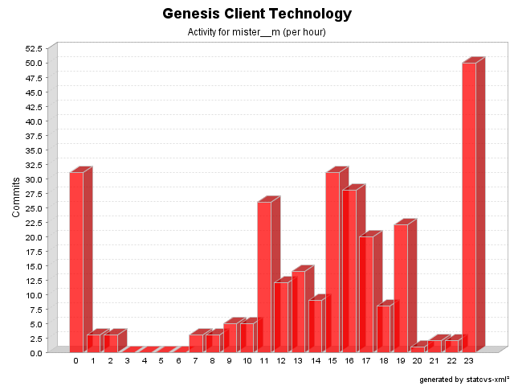

| Login: mister__m Fullname: mister__m Revisions: 278 Lines of Code: 7695 Added Lines of Code: 9477 Lines of Code per Change: 27.7 |

| Date | Author | File/Message |
|---|---|---|
| 12/11/06 3:49 PM | mister__m | Default functions are included by copy (issue # 410)
(1 Files changed,
12 Lines changed) src/net/java/dev/genesis/script/jxpath/JXPathScriptContext.java 1.8
(+12
-3)
|
| 12/7/06 3:46 PM | mister__m | Eliminated broken call in Java 1.4
(1 Files changed,
0 Lines changed) test-src/net/java/dev/genesis/ui/swt/widgets/TableWidgetBinderTest.java 1.3
(+0
-1)
|
| 12/6/06 12:22 AM | mister__m | Updating copyright
(1 Files changed,
1 Lines changed) src/net/java/dev/genesis/ui/thinlet/BaseDialogThinlet.java 1.5
(+1
-1)
|
| 12/6/06 12:21 AM | mister__m | Standalone BaseDialogThinlets can now be used to instantiate new BaseDialogThinlet instances (issue # 403)
(1 Files changed,
16 Lines changed) src/net/java/dev/genesis/ui/thinlet/BaseDialogThinlet.java 1.4
(+16
-2)
|
| 12/5/06 12:58 AM | mister__m | Better message for issue # 392
(4 Files changed,
24 Lines changed) src/net/java/dev/genesis/ui/swt/widgets/AbstractWidgetBinder.java 1.5
(+6
-4)
src/net/java/dev/genesis/ui/thinlet/BaseThinlet.java 1.43
(+6
-4)
src/net/java/dev/genesis/ui/swing/renderers/KeyValueListCellRenderer.java 1.8
(+6
-5)
src/net/java/dev/genesis/ui/swing/components/AbstractComponentBinder.java 1.11
(+6
-4)
|
| 11/17/06 1:13 PM | mister__m | Improved error message reporting, with suggestions when possible (issue # 379)
(11 Files changed,
249 Lines changed) src/net/java/dev/genesis/ui/metadata/annotation/EnabledWhenAnnotationHandler.java 1.2
(+4
-4)
src/net/java/dev/genesis/ui/metadata/annotation/EmptyResolverAnnotationHandler.java 1.2
(+4
-4)
src/net/java/dev/genesis/ui/metadata/annotation/ClonerAnnotationHandler.java 1.2
(+4
-2)
src/net/java/dev/genesis/ui/metadata/annotation/DataProviderAnnotationHandler.java 1.2
(+64
-23)
src/net/java/dev/genesis/ui/metadata/annotation/AnnotationHandlerExceptionFactory.java 1.1 added 128 src/net/java/dev/genesis/ui/metadata/annotation/VisibleWhenAnnotationHandler.java 1.3
(+23
-13)
src/net/java/dev/genesis/ui/metadata/annotation/ClearOnAnnotationHandler.java 1.2
(+4
-3)
src/net/java/dev/genesis/ui/metadata/annotation/EmptyValueAnnotationHandler.java 1.2
(+4
-4)
src/net/java/dev/genesis/ui/metadata/annotation/CallWhenAnnotationHandler.java 1.2
(+4
-3)
src/net/java/dev/genesis/ui/metadata/annotation/EqualityComparatorAnnotationHandler.java 1.2
(+4
-4)
src/net/java/dev/genesis/ui/metadata/annotation/ValidateBeforeAnnotationHandler.java 1.2
(+6
-6)
|
| 11/10/06 3:48 PM | mister__m | Mustang renamed to JavaxScript (issue # 383)
(10 Files changed,
478 Lines changed) src/net/java/dev/genesis/script/javaxscript/JavaxScriptExpression.java 1.1 added 49 src/net/java/dev/genesis/script/javaxscript/bridge/ScriptContext.java 1.1 added 29 src/net/java/dev/genesis/script/javaxscript/bridge/ScriptEngine.java 1.1 added 26 src/net/java/dev/genesis/script/javaxscript/JavaxScriptScriptFactory.java 1.1 added 41 src/net/java/dev/genesis/script/ScriptRegistry.java 1.3
(+1
-1)
src/net/java/dev/genesis/script/javaxscript/bridge/ScriptEngineManager.java 1.1 added 23 src/net/java/dev/genesis/script/javaxscript/JavaxScriptScript.java 1.1 added 47 src/net/java/dev/genesis/script/ScriptUtils.java 1.6
(+1
-1)
src/net/java/dev/genesis/script/javaxscript/bridge/JavaxScriptBridge.java 1.1 added 165 src/net/java/dev/genesis/script/javaxscript/JavaxScriptScriptContext.java 1.1 added 96 |
| 10/4/06 11:36 AM | mister__m | Original exception is now logged (issue # 377)
(1 Files changed,
5 Lines changed) src/net/java/dev/genesis/ui/thinlet/ThinletExceptionHandler.java 1.2
(+5
-2)
|
| 10/2/06 5:02 PM | mister__m | @VisibleWhen with expressions in multiple languages is now handled properly (issue # 374)
(1 Files changed,
1 Lines changed) src/net/java/dev/genesis/ui/metadata/annotation/VisibleWhenAnnotationHandler.java 1.2
(+1
-1)
|
| 9/20/06 3:33 PM | mister__m | ErrorReporterDialog now has a title (issue # 371)
(3 Files changed,
9 Lines changed) src/net/java/dev/genesis/ui/swt/SwtExceptionHandler.java 1.3
(+1
-1)
src/net/java/dev/genesis/ui/swt/ErrorReporterDialog.java 1.2
(+7
-4)
src/net/java/dev/genesis/ui/swt/SWTExceptionHandler.java 1.3
(+1
-1)
|